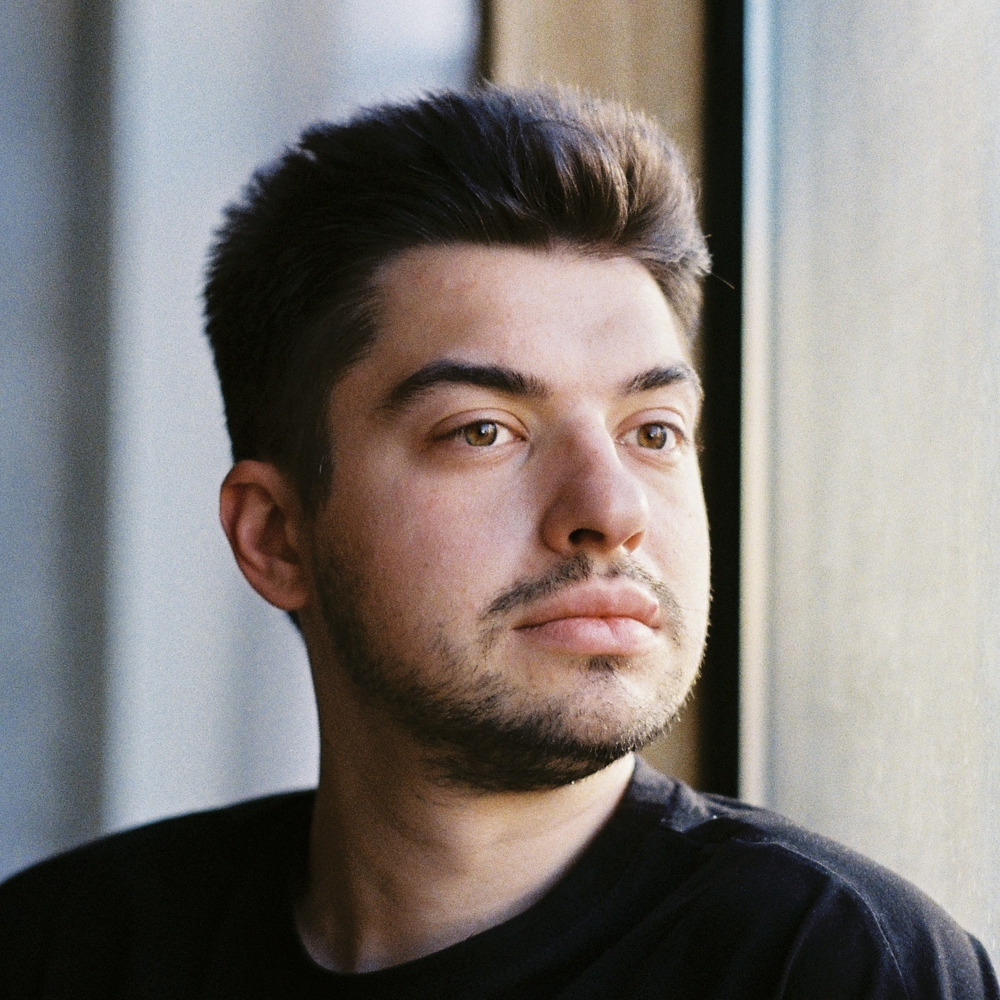
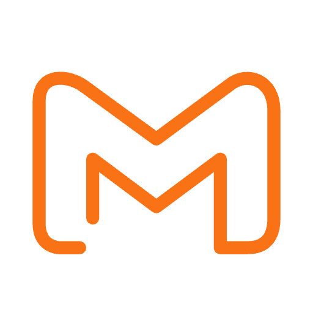
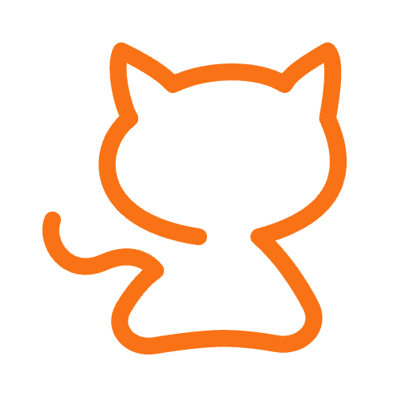
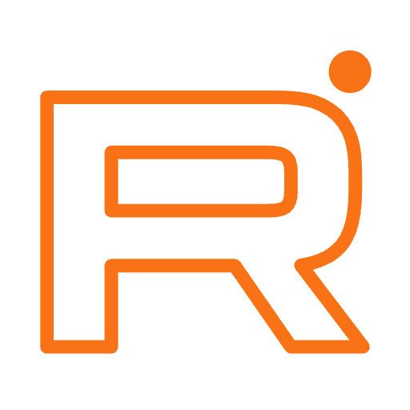

desktop

<div class="card">
    <div class="avatar-holder">
        <!-- avatart -->
        
        
        <div class="shortcuts-holder">
            <!-- telegram -->
            <a href="https://t.me/sergey_showmelove">
                
            </a>
            <!-- mail -->
            <a onclick="copyToClipboard()">
                
            </a>
            <!-- github -->
            <a href="https://github.com/shumilovsergey/">
                
            </a>
            
            <!-- rutube -->
            <a href="https://rutube.ru/channel/42562718/">
                
            </a>
        </div>
    </div>
    
    <!-- right text block -->
    <div class="bio-holder">
        <!-- buttons -->
        <div class="navigation-button-holder">
            <div>
                <div class="navigation-button">Про меня</div>
                <div class="navigation-border"></div>
            </div>

            <div>
                <div class="navigation-button">Карьера</div>
                <div class="navigation-border"></div>
            </div>

            <div>
                <div class="navigation-button">Проекты</div>
                <div class="navigation-border"></div>
            </div>

            <div>
                <div class="navigation-button">Навыки</div>
                <div class="navigation-border"></div>
            </div>
        </div>

        <!-- text -->
        <div class="text-holder-main">
            <!-- про меня -->
            <div class="text-holder-sub">
                <div class="me-fio">Шумилов Сергей</div>
                <div class="me-position">Системный администратор / DevOps</div>
                <div class="me-description">
                    Мое главное призвание — обеспечивать стабильность и безопасность работы 
                    компьютерных систем, а также разрабатывать и поддерживать различные приложения и сервисы. 
                    Моя философия заключается в постоянном стремлении создавать инструменты и решения на базе IT, 
                    которые помогут пользователям в их повседневной работе. Я считаю, что технологии должны быть 
                    простыми отказоустойчивыми и доступными для всех.
                </div>
            </div>

            <!-- карьера -->
            <div class="text-holder-sub">
                <div class="work">
                    <div class="work-date">[ Февраль 2022 / по настоящее время ]</div>
                    <div class="work-position">Системный администратор</div>
                    <a class="work-name" href="https://honka.ru/">Honka</a>
                    <div class="work-deskription">
                        В мои обязанности входит: настройка и поддержка работоспособности серверного оборудования, 
                        орг. техники и парка из 200 рабочих мест. Развертка VPN сервисов. Разработка и поддержка 
                        веб приложений. Администрирование учетных записей пользователей. Сбор компьютеров и подготовка 
                        рабочих мест. Обслуживание почтового сервера. Настройка коммутаторов. Интеграция технических 
                        решений на базе контейнеров и виртуальных машин.
                    </div>
                </div>

                <div class="work">
                    <div class="work-date">[ Декабрь 2020 / Июль 2021 ]</div>
                    <div class="work-position">Инженер тех. поддержки</div>
                    <a class="work-name" href="https://www.fitnesshouse.ru/">Fitness House</a>
                    <div class="work-deskription">
                        Работал в крупной сетевой компании. В мои обязанности входила поддержка пользователей 
                        по всей России, настройка и обслуживание серверного оборудования, подготовка новых рабочих 
                        мест, открытие новых офисов с нуля. Так же я обслуживал слаботочные сети и все что с ними 
                        связанно ( турникеты, шлагбаумы, электронные замки и камеры). Имел опыт командировок.
                    </div>
                </div>

                <div class="work">
                    <div class="work-date">[ Июль 2019 / Декабрь 2020 ]</div>
                    <div class="work-position">Инженер IT</div>
                    <div class="work-name">Индивидуальное предпринимательство</div>
                    <div class="work-deskription">
                        Собирал компьютеры под ключ. Производил ремонт и диагностику PC 
                        и орг. техники. Занимался оптимизации бизнес процессов.
                    </div>
                </div>
            </div>

            <!-- проекты -->
            <div class="text-holder-sub">
                проекты
            </div>

            <!-- навыки -->
            <div class="text-holder-sub">
                навыки
            </div>
        </div>
    </div>
</div>


